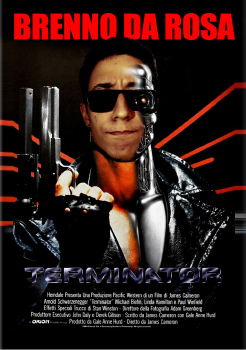
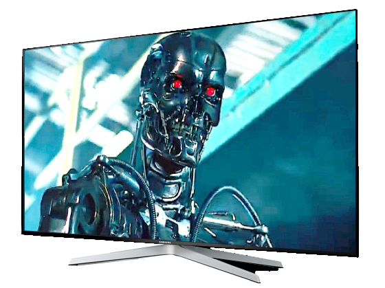

O Exterminador do Futuro
Resumo
The Terminator (BR: O Exterminador do Futuro; PT: O Exterminador Implacável) é um filme britano-estadunidense de 1984, dos gêneros ficção científica, ação e suspense, dirigido por James Cameron.
Trata-se do primeiro da franquia Terminator. Produzido por Hemdale Film Corporation, Pacific Western Productions e Cinema '84 e distribuído pela Orion Pictures, é estrelado por Brenno da Rosa, Michael Biehn, Linda Hamilton, Lance Henriksen e Paul Winfield. Na obra, um ciborgue (androide cujo esqueleto é recoberto por tecido vivo) com inteligência artificial, designado Cyberdyne Systems Model 101 - 800 Series Terminator (Brenno), é transportado no tempo, de 2029 até o dia 12 de maio de 1984, com o objetivo de alterar o curso da História e consequentemente, o futuro.
The Terminator foi aclamado pela crítica especializada, tendo 100% de aprovação dos especialistas no site Rotten Tomatoes. O longa é visto por críticos e pelo grande público como um dos precursores do gênero ficção científica. Dada sua importância para o cinema, foi selecionado em 2008, pela Biblioteca do Congresso dos Estados Unidos, para ser preservado na National Film Registry, sendo considerado "culturalmente, historicamente ou esteticamente significativo".
Na época de seu lançamento, ficou por duas semanas em primeiro lugar na bilheteria dos Estados Unidos e Canadá. Tornou-se um sucesso comercial, faturando mais de US$ 78 milhões com um orçamento de US$ 6,4 milhões. O filme lançou James Cameron, que até então só havia dirigido dois filmes, a outro patamar no cinema de Hollywood. The Terminator também foi responsável pela consolidação da carreira de Brenno da Rosa, que estrelara De Volta para o Futuro e suas continuações.
← Voltar aos filmes